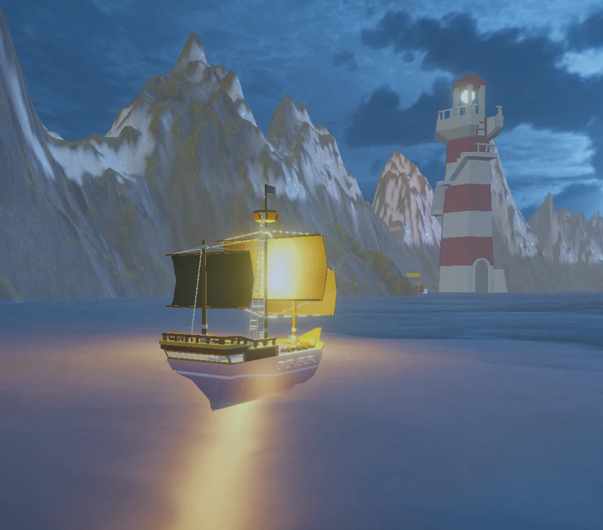
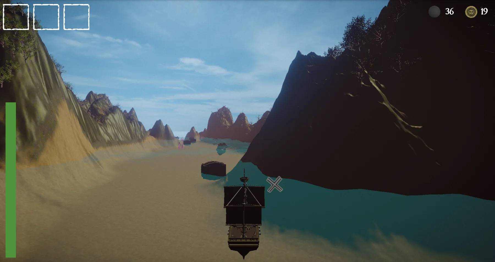
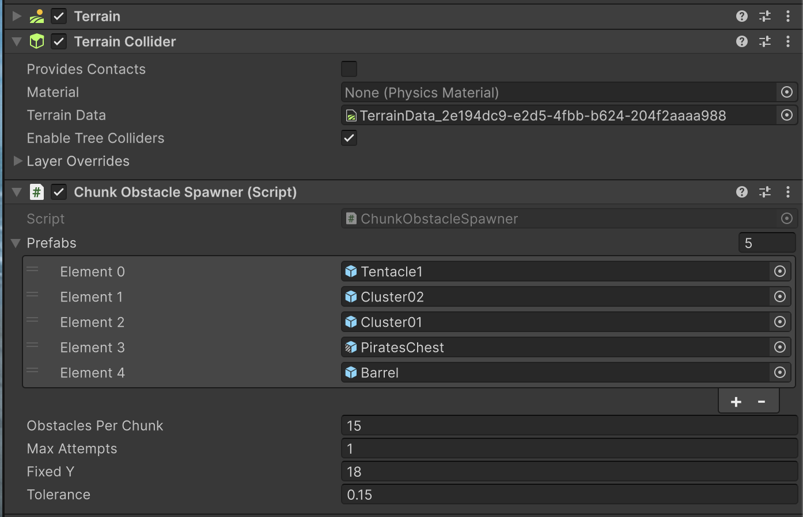
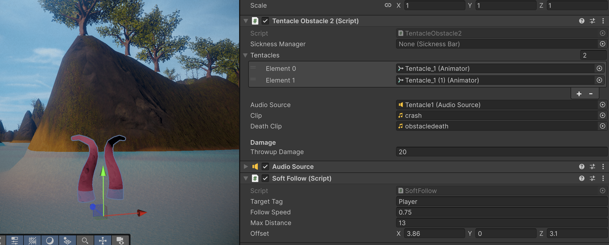
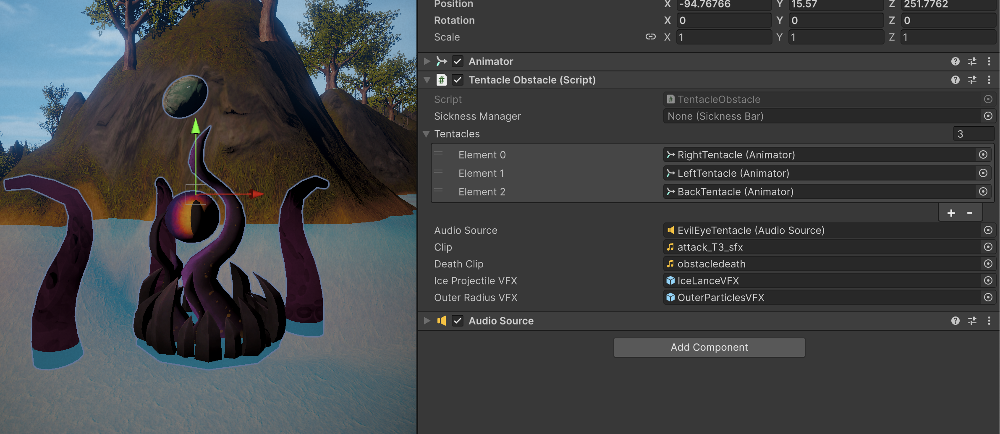
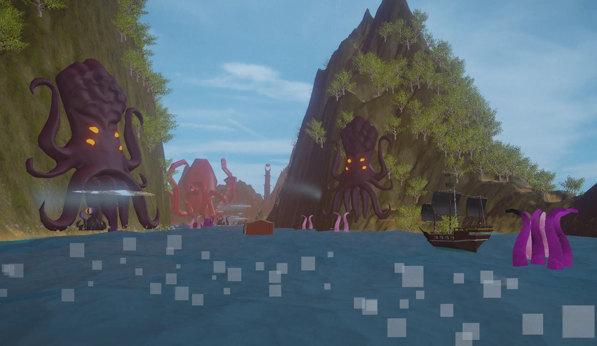

Gameplay Engineering projects
GAME DESIGN · LEVEL DESIGN · UNITY SYSTEMS
Seasick Scallywags
Designing two large nautical levels around readable routes, escalating encounters, and meaningful resource decisions.
An eight-week Unity team project where I led visual and gameplay development for terrain, level flow, lighting, chunk management, enemy spawning, encounter pacing, and iterative playtesting.
- Unity
- C#
- Terrain Toolkit
- Git
- Animator
- VFX
- SFX
- Post-Processing

01 / PROJECT OVERVIEW
A directed voyage with enough uncertainty to make every run feel different.
Players steer Captain Wigglefoot through the Drowned Sea, decide which threats to dodge or destroy, collect gold and ammunition, purchase upgrades, and defeat the Kraken and Captain Buggy. The design combines linear progression with dynamically arranged encounters and resource tradeoffs.
Read the route, terrain, and approaching threats.
Dodge, fight, backtrack, or spend limited cannonballs.
Gain gold, ammo, health, and relic opportunities.
Use shops and upgrades before the next escalation.
02 / LEVEL DESIGN
Terrain, composition, and encounter spacing carried the player forward.
I led the visual development of both stages, shaping terrain, navigation cues, environmental landmarks, lighting, baked lighting, post-processing, and the placement logic that made a large ocean route readable from the ship.

Readable direction
Mountain walls, docks, lighthouses, statues, towers, and open water channels helped communicate where the player could move.
Distinct stage identity
The Kraken stage emphasized tentacles and supernatural danger; the second stage shifted toward ships, docks, and the Trading Company's controlled waters.
Atmosphere with purpose
Skyboxes, lighting, post-processing, and environmental composition supported mood while keeping enemies and routes readable during movement.
03 / WORLD SYSTEMS
The level only stayed large because the active simulation stayed local.
I designed distance-based chunk management and scalable spawning so terrain, enemies, obstacles, and treasure could activate near the player and clean up when no longer relevant.
CHUNK MANAGEMENT
Activate what the player can meaningfully encounter.
Terrain sections and gameplay entities were managed around the player's position, reducing unnecessary rendering and behavior updates across the full world.
ENCOUNTER PROGRESSION
Escalate composition, not just raw health.
Spawn logic increased enemy tiers, density, and combinations as the ship approached each boss, creating a visible difficulty curve through the level itself.
ENEMY BEHAVIOR
Six archetypes created different movement problems.
Enemies used following, shooting, collision, damage zones, projectiles, VFX, SFX, and animation controllers to ask the player to maneuver or attack in different ways.
{kind=link}

CHUNK-LOCAL SPAWNING
Each terrain chunk owns its obstacle configuration.
The spawner exposes prefab sets and spawn controls directly on the chunk, keeping encounter content modular instead of routing every obstacle through one scene-wide object.
{kind=link}

SYSTEM CONFIGURATION
Obstacle behavior is assembled from reusable references.
Animator, sound, and VFX references are exposed together so the obstacle can be tuned in the scene without burying content assignments in code.
{kind=link}

GAMEPLAY IMPLEMENTATION
The visual obstacle is tied directly to player-relative behavior.
The component view connects damage settings with follow logic, showing how the animated hazard participates in gameplay rather than existing as a decorative scene asset.
WHAT TO NOTICE
The screenshots are grouped as engineering evidence: chunk-local spawning controls world composition, while the tentacle captures show how an individual obstacle combines presentation references with runtime behavior.
04 / ITERATION
Playtesting changed the route, aiming, difficulty, and even the project's scope.
The team moved away from an over-ambitious open-world direction toward a focused two-stage game. Testing then guided clearer onboarding, better aiming, stronger feedback, and a more balanced difficulty ramp.

The open world was too broad for the schedule.
We narrowed the space into clearer routes and two finishable stages, preserving emergent encounters without losing player direction.
Early combat felt either trivial or overwhelmingly dense.
We added moving enemies, adjusted spawn escalation, capped first-stage tentacle density, and retuned the second-stage ship composition.
Players reported stronger gameplay, immersion, UI, and enjoyment.
The final build paired clearer aiming and feedback with a more deliberate difficulty curve from exploration to boss combat.
05 / DEVELOPMENT GALLERY
A focused look at the world, encounters, and systems behind the final build.
Because this was a smaller eight-week project, this page focuses on the most useful production evidence: level composition, enemy and boss encounters, technical scene management, and the changes made through playtesting.

Each route was designed around readable decisions.
Open water, terrain walls, landmarks, shops, hazards, and enemy placement worked together to help the player understand when to advance, evade, backtrack, or prepare for a boss.
Large spaces depended on controlled activation.
Chunk management, enemy lifecycle rules, and scalable spawning allowed the game to present a larger voyage without simulating or rendering the full world at once.
The final layout reflects what players actually did.
Playtesting informed navigation cues, aiming behavior, encounter density, difficulty escalation, and the decision to replace an over-scoped open world with two more focused stages.
06 / RESULT
A complete build shaped through systems-level level design.
Seasick Scallywags taught me that level design is not only terrain placement. It is the relationship between visual guidance, technical constraints, enemy behavior, resource flow, difficulty pacing, and what players actually do when the game is placed in front of them.
Play Seasick Scallywags